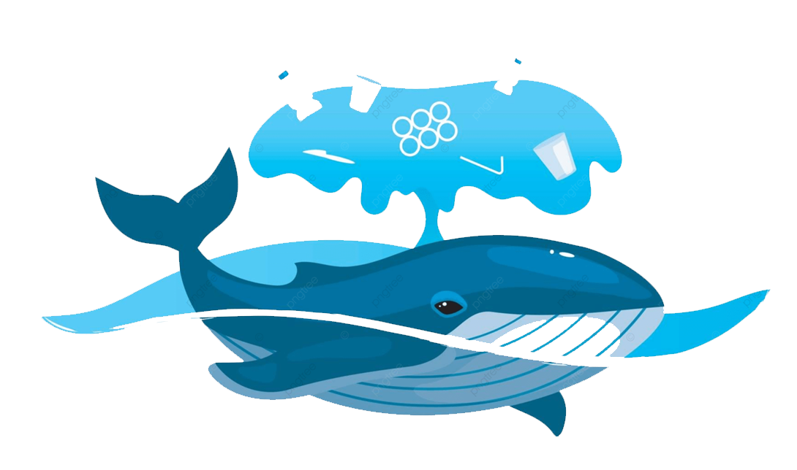
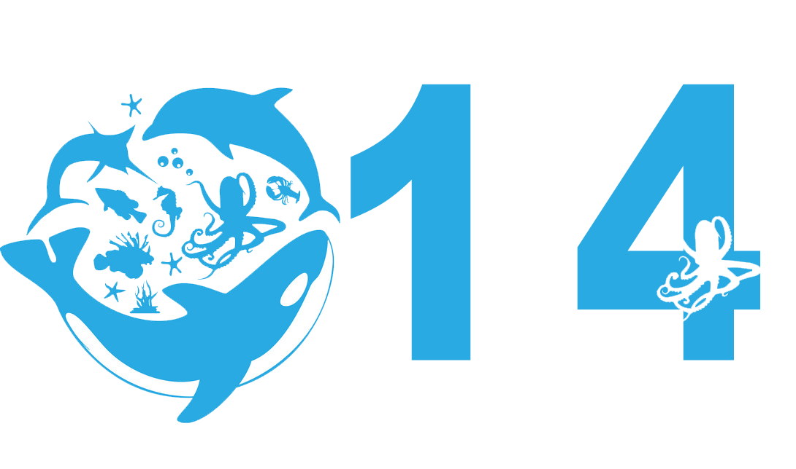

Objetivos de Desarrollo Sustentable de la ONU ¿Que son?

17 Objetivos para las personas y para el planeta.
Los Objetivos de Desarrollo Sostenible (ODS) constituyen un llamamiento universal a la acción para poner fin a la pobreza,
proteger el planeta y mejorar las vidas y las perspectivas de las personas en todo el mundo. En 2015,
todos los Estados Miembros de las Naciones Unidas aprobaron 17 Objetivos como parte de la Agenda 2030 para el Desarrollo Sostenible,
en la cual se establece un plan para alcanzar los Objetivos en 15 años.
Conservar y utilizar sosteniblemente los océanos

Objetivo 14
Conservar y utilizar sosteniblemente los océanos, los mares y los recursos marinos para el desarrollo sostenible
Los océanos son el punto en el que se unen el planeta, las personas y la prosperidad, y en eso consiste el desarrollo sostenible:
en que todos nosotros, como accionistas de la empresa que es la Tierra, reconozcamos la responsabilidad que tenemos para con el planeta,
las personas y los océanos, que son su fuerza vital, y actuemos en consecuencia.
Que es YucOcean?
Somos una Asociación para la promocion del cuidado de nuestros Ocenanos.
En Yucatán, nuestros cenotes son parte importante de nuestra identidad
mantenerlos limpios y fomentar su cuidado, evitar la contaminacion del Subsuelo
tambien contribuye al cuidado de nuestros Ocenanos y al cumplimiento del Objetivo 14 de la ONU.
Es importante esta labor social, ya que tenemos la responsabilidad de preservar nuestros patrimonios
para el disfrute de las futuras generaciones, y crear conciencia social es la mejor manera de lograrlo.
Quieres conocer más ...
Ailyn Guadalupe Pérez Martín.